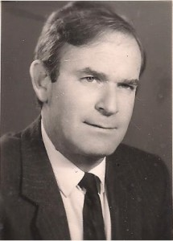

יליד ישראל, תל-אביב;
{kind=link}
הוריו הועידו אותו להיות מוסיקאי וכך למד נגינה בכינור במשך – 8 שנים אצל כנר הפילהרמונית יוסף קמינסקי, אך עקב עומס הלימודים בביה”ס התיכון נאלץ לוותר על הנגינה.
בד בבד שימש מגיל 14 עד גיל 18 בתפקיד “מבקר” מוסיקאלי בתור “כתב צעיר” בעיתון ילדים ונוער. ערב גיוסו לצה”ל, השתתף בקורס לעיתונאות שיזם “מעריב”.
לאחר גמר השירות, ביצע – בין השאר – עבודות עזר לתיקונים ושיפורים בשפה העברית אצל דן פינס, עורך העיתון “אמר” / “דבר”.
כאשר נסע לאנגליה ללימודי דוקטורט במשפטים, השתתף בקורס לניצוח כתלמיד – שלא מן המניין – שערך המנצח קולין דיוויס.
_______________________________________________________________
תארים
בוגר הפקולטה למשפטים LL.B באוניברסיטה העברית – שלוחת תל אביב (magna sum laude);
בעל תואר Ph. D במשפטים באוניברסיטת לונדון (magna cum laude) – דיני ביטוח: ברירת ביטול ובטלות בחוזה הביטוח ובדיני חוזים (משפט אנגלי ואמריקאי);
Adjunct Professor – בית הספר למשפטים באוניברסיטת מלבורן.
_______________________________________________________________
עריכת דין
התמחות: משרד ש. הורוביץ ושות’.
עו”ד במשרד זה במשך חמש שנים בתחום הליטיגציה המסחרית.
לאחר מכן, בעל משרד עצמאי בתחומי:- ניהול בוררויות; ליטיגציה מסחרית; התמחות בדיני ביטוח; ייעוץ ומתן חוות דעת בתחומים שונים במשפט האזרחי.
סניגור במשפטים פליליים בבתי המשפט המחוזיים ובבית הדין הצבאי לערעורים.
שירות צבאי (במילואים): הפרקליטות הצבאית – תובע בפרקליטות חיל האוויר ובביה”ד הצבאיים; יועץ במדור הייעוץ והחקיקה; מדריך בדיני צבא בקורסי קצינות וקצינים; אב בתי הדין הצבאיים ברמאללה, ג’נין וחברון (בדרגת ייצוג של רס”ן וסא”ל); מחבר הנחיות לנציגי הפרקליטות בזמן חירום.
אקדמיה
מרצה בכיר בפקולטה למשפטים באוניברסיטת תל אביב במשך 13 שנים במקצועות החובה: “משפט מקובל” – שיטות המשפט האנגלי והאמריקאי (היסטוריה); סדר דין אזרחי; מקצועות בחירה וסמינרים: – פיצויים לנפגעי תאונות דרכים; דיני ביטוח; דיני הוצאה לפועל; דיני פשיטת רגל; עקרונות המסגרת של הפרוצדורה האזרחית; דיני תרופות וסעדים זמניים; סמכויות בתי המשפט ובתי הדין במשפט האזרחי.
בשנת תשל”ח (ספטמבר 1978) יצא לאור ספרו הראשוני: “ביטוח נפגעי תאונות דרכים” (החקיקה בנדון נכנסה לתוקפה בספטמבר 1976). במהלך השנים פורסמו מחקרים ומאמרים בכתבי-עט משפטיים (הרשימה להלן).
משרות הוראה נוספות:
- The city of London college – דיני חוזים במשפט האנגלי במעמד מרצה במהלך מחקרו לקראת התואר Ph.D;
- Melbourne University Law School במקצועות: ההסטוריה של המשפט האנגלי; משפט השוואתי בדיני חיובים – מקורות המשפט באנגליה ובארה”ב;
- מרצה בכיר (שלא מן המניין) בפקולטה לניהול באוניברסיטת תל-אביב במקביל להוראה בפקולטה למשפטים במקצועות: דיני עסקים, משפט עסקי, משפט מסחרי, לרבות במסגרת לה”ב ותל”מ (קורסי מנהלים) – דיני ביטוח;
- מרצה (שלא מן המניין) בפקולטה למשפטים באוניברסיטה העברית בירושלים במקצוע: דיני אכיפת חיובים;
- עמית בכיר בפקולטה למשפטים באוניברסיטת חיפה במקצוע החובה: סדר דין אזרחי;
- הוראה בבתי ספר למשפטים במכללות שונות במשך 11 שנים במקצועות: שיטות משפט; סדר הדין אזרחי; הליכי ערעור; הליכי ביזיון בית המשפט; דיני תרופות וסעדים זמניים; דיני ביטוח (היסטוריה והדין בישראל); סוכנות ביטוח ושליחות בדיני ביטוח – עקרונות כלליים ודין מיוחד;
- מרצה בהשתלמויות שופטים במסגרת המכון ע”ש זוסמן; השתלמויות לעורכי דין במכון להשתלמות עורכי דין של אוניברסיטת תל אביב; וכן במכון להשתלמות עורכי דין של לשכת עורכי הדין בנושאים הבאים:-
פיצוי נפגעי תאונות דרכים; דיני ביטוח – התפתחות והיסטוריה; פרשנות תנאים בחוזה הביטוח; חובת גילוי ותום לב מכוח חוק חוזה הביטוח לעומת דיני החוזים הכלליים; דיני שליחות כלליים ומעמד סוכן הביטוח; חידושי חוק חוזה הביטוח; חובת תום הלב המיוחדת מצד חברות הביטוח; דיני שליחות כלליים ומעמד סוכן הביטוח; חידושי חוק חוזה הביטוח; הפיקוח על עסקי ביטוח – ההלכה והמעשה; הליך “קדם המשפט” ותרומתו; סמכויות בתי המשפט וסמכות טבועה; יישום המושג “סמכות טבועה” על ידי בתי המשפט; ליקויים בסדר הדין האזרחי – הליכים מיותרים; ברירת דרכים לפתיחת ההליך האזרחי; זכויות דיוניות של בעלי הדין בהליך האזרחי; מטרות הפרוצדורה האזרחית – ההגדרות השגרתיות וההגדרה הראויה; חידושים בתקנות סדר הדין האזרחי (2001 ואילך); התרופות והסעדים הזמניים במשפט המהותי ובפרוצדורה האזרחית; ערבויות מבקש הסעד הזמני – הליקויים בתקנות סדר הדין האזרחי; השוואת סדרי הדין והסעדים בעוולות המסחריות וסדר הדין האזרחי הכללי.
נציגות בוועדות ציבוריות ומקצועיות:
- נציג היועץ המשפטי בוועדה לקביעת “נוסח חדש” של פקודת פשיטת הרגל;
- נציג ויועץ מטעם לשכת עורכי הדין בוועדת חוקה, חוק ומשפט ובוועדות המשנה שלה בחקיקת חוק חוזה ביטוח התשמ”א-1981; חוק הפיקוח על עסקי ביטוח התשמ”א–1981 וכן תקנות הפיקוח בתחום הביטוחים האלמנטריים;
- חבר ויועץ משפטי בוועדה לחלוקת פרסים בתחום מחקרי ביטוח, במרכז ללימודי ביטוח ע”ש ארהרד בפקולטה לניהול באוניברסיטת תל-אביב;
- חבר מערכת “פסקים מחוזיים” בהוצאת לשכת עורכי הדין;
- חבר מערכת “הפרקליט” – בטאון לשכת עורכי הדין;
פרסים:
- פרס ראשון בתחרות עבודות מחקר מטעם שגרירות טורקיה על הרפורמות המשפטיות של אתא טורק;
- פרס לימודים לעידוד המחקר המשפטי מטעם .Draper corp ואוניברסיטת לונדון;
- פרס קרן פנחס רוזן למחקרי משפט מטעם שר המשפטים בנושא: “ההליך השיפוטי וניהולו” (חלקו פורסם בספרות המשפטית);
- תעודת הצטיינות בהוראה מטעם נשיא אוניברסיטת חיפה ואגודת הסטודנטים;
פרסומים בתחום המוסיקה:
הסדר תחיקתי לעידוד המוסיקה העברית המקורית, עיונים במוסיקה, יוני 1982, 69 (איגוד הקומפוזיטורים בישראל).
פרסומים בתחום המשפט: ספרות ומאמרים:
- מחקר: “עקרונות חדשים בביטוח רכב מנועי”– מפרסומי הפקולטה לניהול באוניברסיטת תל-אביב;
- ספר: “ביטוח נפגעי תאונות דרכים” (בהוצאת דיני הביטוח בישראל);
- “הסמכות הטבועה של בתי המשפט“, עיוני משפט י’ 37 ;
- “ביטוח חבות” ו- “ביטוח אישי” לאחר תיקון פקודת ביטוח רכב מנועי”, משפטים ח’ 261;
- “זכויות דיוניות של בעלי הדין ו- “ברירת סדר הדין האזרחי”, הפרקליט ל”ב 189;
- “דרכים לפתיחת ההליך האזרחי – מגמות חדשות”, עיוני משפט ה’ 281;
- “Uberrimae Fidei בחוזי ביטוח לאור חוק החוזים (חלק כללי)”, עיוני משפט ה’, 345;
- “היבטים עיונים של קדם המשפט”, (עם מ. בורונוסקי) – עיוני משפט ד’ 312;
- “אינטרס בר – ביטוח – עיון מחודש במושג מקובל”, עיוני משפט ד’, 67;
- “שיקולי פקיד השומה”, הפרקליט תשכ”ד, 120.
- “שפיטה לפי מיטב השומה”, הפרקליט תשכ”ה, 85.
פירסומי עיתונות:
“הארץ” (1980-1994)
השריף, החוק והמדרכה (2.3.80); התאבדות במשטרה (29.1.81); עד עויין – עד מתי (1.3.81); פיקוח לקוי על עסקי ביטוח (16.9.86); השופט שטרוזמן פורש (22.6.94); מי יבקר את היועץ המשפטי לממשלה (14.8.94); שיניים לחוק יסוד כבוד האדם וחירותו (12.9.94);
“מעריב” (1970-1994)
ציונות בסאונה פינית (26.1.70); “ימי הביניים” בבתי המשפט (15.7.73); בוטיצ’לי – אינו רק שם של צייר (27.10.76); כאשר אגדל אהיה עד מדינה (2.11.76); שיפוט בתביעות קטנות – בכייה לדורות (22.12.76); “השקט המוזר” סביב החוק לפיצוי נפגעי תאונות דרכים (29.9.76); “הוראת שעה” (29.1.80); ההורים שלנו (11.2.80); עצמאות משפטית – כיצד? (10.7.80); מי יהיה השעיר לעזאזל (27.1.80); פרומתיאוס בקמפוס (23.3.81); מגילת אסתר בכל עת (17.3.81); האמנם הגנת הצרכן (26.4.81); את מי מייצג סוכן הביטוח שלך (26.6.81); מדיניות משפטית חדשה לחופש העיתונאי (13.10.94);
“גלובס”
“החשאיות פוגעת במבוטחים (החשאיות בדיווחי חברות הביטוח למפקח על הביטוח)” (18.12.92);
השבועון “שישי”
“מה רוצים ממבקרת המדינה?” (22.7.94)
בן, יזהר גולדשטיין, יליד 1983; בוגר הפקולטה למשפטים באוניברסיטת תל אביב LL.B; חבר לשכת עורכי הדין – 2010; תחומי עיסוק והתמחות– דיני מקרקעין, מיסוי מקרקעין, ליטיגציה מסחרית, תובענות ייצוגיות והזכות לפרטיות במערכות מידע; לימודי מדעי המחשב.
רעיה, פסי גולדשטיין לבית גולדפרב.
סיימה את לימודי התיכון המאוחד ברחובות. שירות צבאי – שרתה
בצה”ל בתפקיד רשמת בית הדין הצבאי לערעורים במושבו ביפו.
בוגרת המכללה לחינוך ע”ש שיין; בעלת תואר B.A. של החוג
לחינוך מיוחד והחוג לתיאטרון באוניברסיטת תל אביב; עסקה במשך
שנים בהוראה במסגרת חינוך מיוחד והוראה טיפולית; בראשית דרכה
בחרה דווקא להורות חינוך מיוחד בבית הספר המיוחד שהיה בזמנו
ב-יהוד. לאחר מכן הייתה מחנכת טיפולית לבעלי לקויות למידה בבית
הספר של קריית שלום, בבית הספר של מעוז אביב ובבית הספר של רמת
אביב ג’. במסגרות אלה סיימה השתלמויות רבות בסוגיות חינוך.
הורים –
האם, בלומה – פרחיה פרוינד – גולדשטיין ז”ל, עלתה לא”י בשנת 1933, ילידת אנטוורפן, בלגיה, מתורגמנית במקצועה. היא נמנתה על תלמידותיו של הרב עמיאל, הרב הראשי של בלגיה. כיהנה כנשיאת תנועת צעירות “מזרחי” בבלגיה (1926-1932), ציר בקונגרסים הציוניים בציריך; בוגרת אוניברסיטת וינה במדעים קלאסיים – החוג לפילולוגיה; מתורגמנית לשפות זרות בבנק אנגלו – פלסטינה (אפ”ק) המנדטורי לאור שליטתה ב-6 שפות, ולאחר מכן באותו תפקיד בבנק לאומי לישראל, עד לפרישתה.
בשנות ה-50 הייתה יועצת מקצועית מטעם נספח התרבות של הציר הצרפתי בניהולו של מועדון הספר הטוב (ספרות צרפתית, אנגלית וגרמנית – בהן הייתה בקיאה); ממייסדות התנועה הפרוגרסיבית- ליברלית; יועצת ליו”ר ה”מכביות” בארגון האתלטים מחו”ל; מתרגמת ספרים עבריים לגרמנית וצרפתית.
האב, שלמה גולדשטיין ז”ל, סטטיסטיקאי, חלוץ העליה השלישית (1920 בהיותו בן 16); השתתף בסלילת כבישים דוגמת כביש ג’דה-חיפה ובייבוש ביצות בכרכור וצפון השומרון. ביחד עם חבריו שעלו מפולין (בהנהגת אחיו, שמשון גולדשטיין-גלעד, שהגיע לא”י ב-1919 באניה “רוסלן”) לימים, ממייסדי מכון וולקני. הם הקימו התיישבות בשם “תל צור”, הסמוכה לרמת הנדיב דהיום, אולם הקרקע העקרה ומחלת המלריה הקשה מנעו את המשך קיומה.
שלמה נמנה על ראשוני ארגון ההגנה, חבר פעיל בשירות הידיעות (הש”י), חבר במשלחת הרכש בחו”ל לרכישת הנשק למלחמת העצמאות בראשות פנחס ספיר בשנים 1947-1949; מראשוני המרכז החקלאי בראשותו של לוי אשכול ומנהל אגף הקיבוצים במוסד זה; מנהל ברית הפיקוח לקואופרציה החקלאית העובדת עד לפטירתו, בטרם עת, בשנות ה-50 לחייו.
עו”ד ד”ר פנחס גולדשטיין ז”ל נפטר ב- 12.1.18, כ”ה בטבת התשע”ח.